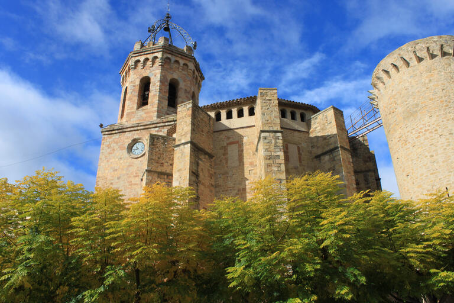

Visita · Tremp
La primitiva església de característiques romàniques fou reemplaçada totalment per l'actual, un edifici d' una única nau amb capelles laterals , bastit inicialment entre 1638 i 1647. El campanar…